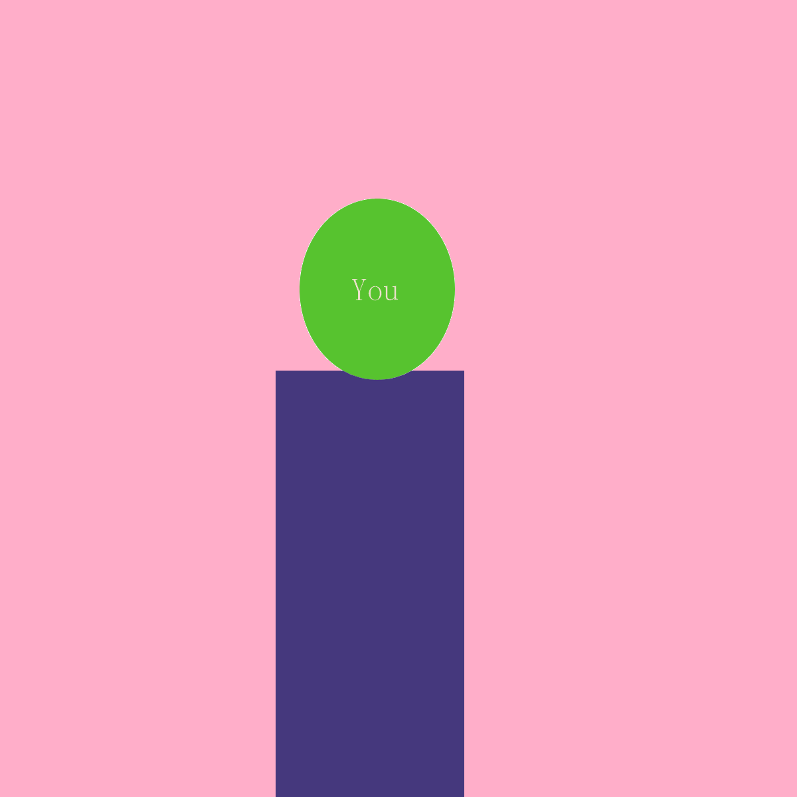

<h1>New game page</h1>
    <div id="profile-creation">
        <form #userInfo="ngForm">
            <div id="text-input">
                <label for="playerName">Name</label>
                <input id="playerName" type="text" name="playerName" class="form-input" required [(ngModel)]="user.name">
            </div>
            <div id="radio-input-pronouns">
                <label for="playerPronouns">Pronouns</label>
                <input id="male" type="radio" value="F" name="playerPronouns" class="form-input" required [(ngModel)]="user.pronoun">she/her
                <input id="female" type="radio" value="M" name="playerPronouns" class="form-input" required [(ngModel)]="user.pronoun">he/him
                <input id="neutral" type="radio" value="N" name="playerPronouns" class="form-input" required [(ngModel)]="user.pronoun">they/them
            </div>
            <div id="radio-input-image">
                <label for="playerAppearance">Appearance</label>
                <input id="short-light" type="radio" value=1 name="playerAppearance" class="form-input" required [(ngModel)]="user.appearance">Option A
                <input id="short-medium" type="radio" value=2 name="playerAppearance" class="form-input" required [(ngModel)]="user.appearance">Option B
                <input id="short-dark" type="radio" value=3 name="playerAppearance" class="form-input" required [(ngModel)]="user.appearance">Option C
                <input id="Long-light" type="radio" value=4 name="playerAppearance" class="form-input" required [(ngModel)]="user.appearance">Option D
                <input id="Long-medium" type="radio" value=5 name="playerAppearance" class="form-input" required [(ngModel)]="user.appearance">Option E
                <input id="Long-dark" type="radio" value=6 name="playerAppearance" class="form-input" required [(ngModel)]="user.appearance">Option F
                <!-- <input id="short-dark" type="radio" value="SD" name="playerImage" class="form-input" required [(ngModel)]="user.image"> -->
            </div>
            <button id="submit-button" routerLink="/main" (click)="submit(userInfo)">create</button>
        </form>
    </div>
<button id="back-button" routerLink="/start" (click)="goBack()">back</button>
